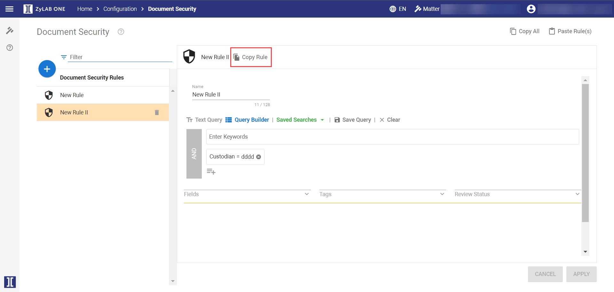
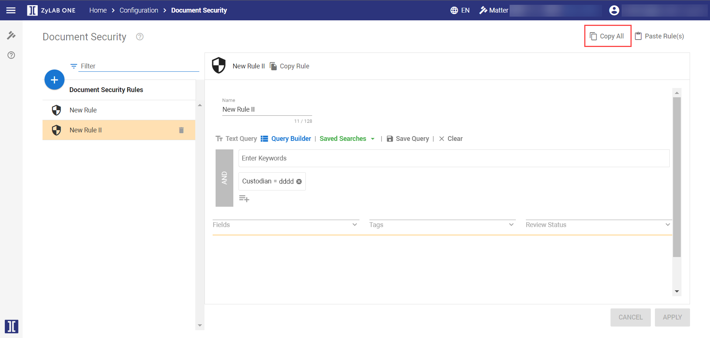
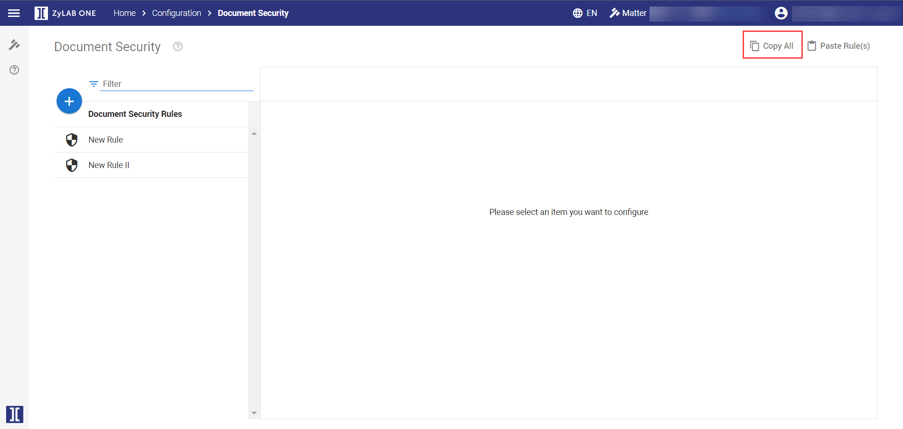
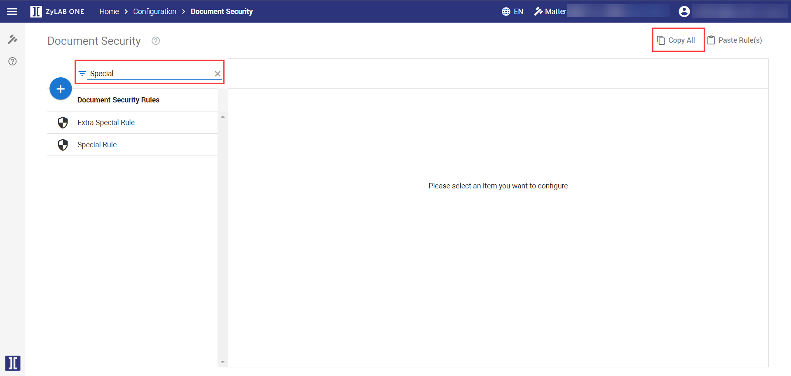
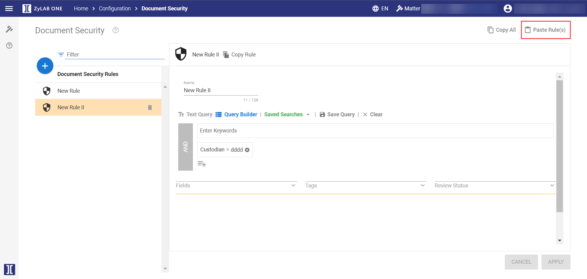
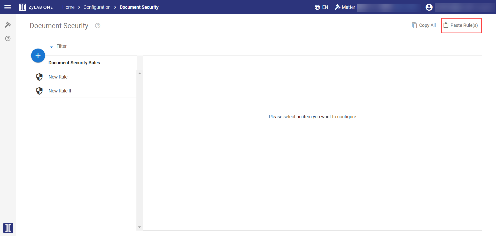

Note I: If no queries (rules) are defined, then all users can view all documents.
Authorize content access on the document level.
Create Document Security Rules (using queries) to define a set of documents.
You could, for example, create 3 different Document Security Rules:
This rule will retrieve all documents that have been tagged as Relevant.
This rule will retrieve all documents that have been tagged as Confidential.
This rule will retrieve all documents that have been tagged as Top Secret.
Once the Document Security Rules have been defined, define the Roles. A role is a selection of permissions. For example, a role might consist of two permissions: Access Matter and Access Documents. A user that has been assigned with this role, is allowed to search for documents and view them in the Document List, but not open them. To open them, the user needs a role with the added permission Access Document Contents.
|
|
Note I: If no queries (rules) are defined, then all users can view all documents. |
|
|
Note II: Security is set per role, not per user. Roles are assigned to users. For more information—see Role Management and User Management. |


Select 
Define a name.
Specify one or more queries.
Do not use full text queries.
For more information—refer to the ZyLAB One Search Language Guide.
Click Apply. The new rule is added to the pane on the left.
Once you have created one or more rules, you can filter them. You can also edit or remove them.
Once a rule has been created, it can be copied and pasted into other matters, reducing the time needed to create roles in each matter.
To copy roles from one matter into another matter, choose from the following:
To copy a single rule, select the rule from the left-hand pane. Click Copy Rule.

To copy all rules, select Copy All. This option is displayed in the top-right corner of a Rule page, and on the Document Security overview page.


To copy a selection of rules, use the Filter function. Then, click Copy All from the Document Security overview page to copy the filtered selection of roles.

To paste the copied rule(s) into another matter, open the target matter. Then, navigate to Configurations > Document Security.
Click Paste Rule(s). This option is displayed in the top-right corner of a Document Security Rule page, and on the Document Security overview page.


|
|
Note: Shortcut keys (Ctrl C + Ctrl V) can be used, but may not work for all users. If unavailable, the Copy and Paste buttons should be used. |
Duplicate rules are not allowed. If the Document Security Rule already exists, an error message will appear.
If the rule is assigned specific properties that do not exist in the target matter, then the copied rule will be pasted without these permissions.